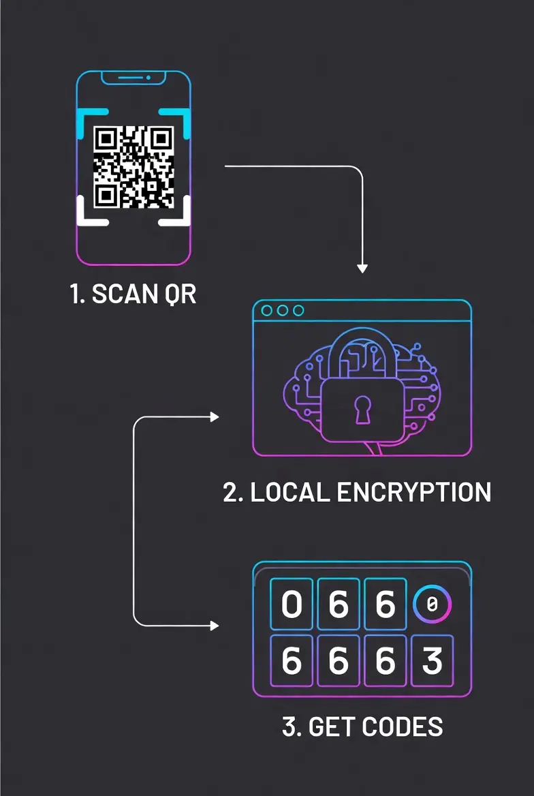

Titan Auth Pro
Secure Client-Side 2FA Vault — No Cloud. No Leaks.
100% Client-Side Processing
Add New Account
Vault is empty.
Add your first 2FA account securely.
Why Passwords Are No Longer Enough?
In the current digital landscape, relying solely on passwords is like locking your front door but leaving the window wide open. Data breaches happen daily. If you use the same password for multiple sites, a leak in one platform puts your entire digital life—Facebook, Gmail, Binance, and Bank accounts—at risk.
This is where Two-Factor Authentication (2FA) becomes your digital bodyguard. Even if a hacker steals your password, they cannot access your account without the rotating 6-digit code generated by Titan Authenticator Pro. It adds a second layer of verification that is time-sensitive and unique to your device.
How to Use Titan Authenticator: A Step-by-Step Guide

1. Setting Up Your Security PIN
When you first open the tool, go to the Security tab. Create a 4-digit PIN. This PIN is used to encrypt your database via PBKDF2 hashing. Without this PIN, your saved keys are completely inaccessible.
2. Adding Accounts (2 Ways)
- QR Scan: Click "Add" > "Scan QR". Point your camera at the QR code provided by Facebook, Gmail, or Binance. If successful, the fields will auto-fill.
- Manual Entry: If you are on the same device, copy the "Secret Key" (Base32) from the service and paste it into the "Secret Key" box. Give it a name and click Save to Vault.
3. Backing Up Your Data (Crucial!)
Since we don't store your data on cloud servers, you must backup your vault. Click the Backup button to download a .json file. Store this file on a USB drive or secure cloud storage. This is your only lifeline if you lose your device.
4. Restoring & Merging
Got a new phone? Click Restore and select your backup file. You will get two options:
- REPLACE: Wipes the current list and loads the backup.
- MERGE: Keeps your current accounts and adds new ones from the backup file (Great for syncing two devices).
Titan Auth vs. Google Authenticator: What's the Difference?
Many users ask, "Why should I use Titan Auth over the standard Google Authenticator or Authy?" The answer lies in Data Sovereignty and Privacy.
Cloud-Based Authenticators (Google/Authy)
Most popular apps sync your secret keys to their cloud servers. While convenient, this creates a centralized target for hackers. If their cloud servers are breached, your 2FA keys could be exposed. Additionally, you need an internet connection to sync.
Titan Authenticator Pro (Client-Side)
Titan Auth takes a Zero-Trust approach. We do not have servers. We do not have a database. Your secret keys are:
- Stored strictly in your browser's LocalStorage.
- Encrypted using AES-256 (Military Grade) with Salted PBKDF2 Key Derivation.
- Accessible ONLY by you via your PIN.
This means you are in total control. No "Big Tech" company is holding your keys. Plus, it works 100% offline, making it perfect for travel.
Under the Hood: The Security Architecture
Transparency is key to trust. Here is exactly how we handle your sensitive data without sending it to any server:
1. The Encryption Engine (PBKDF2 + AES)
We use PBKDF2 (Password-Based Key Derivation Function 2) to generate a strong cryptographic key from your 4-digit PIN and a random salt. This key is then used to encrypt your vault using AES-256-CBC via the CryptoJS library. This ensures that even if your PIN is simple, the encryption key remains robust.
2. TOTP Generation (RFC 6238)
We follow the global industry standard for Time-Based One-Time Passwords. The tool calculates a unique hash based on the current Unix Time and your Secret Key. This calculation happens locally in your device's CPU/Processor, ensuring zero latency.
3. Portable Backup System
Since we don't store your data in the cloud, we provide a robust JSON Backup feature. You can export your encrypted vault and store it on a USB drive. This gives you the freedom to move between devices without being locked into a specific ecosystem.
Initializing secure discussion portal...